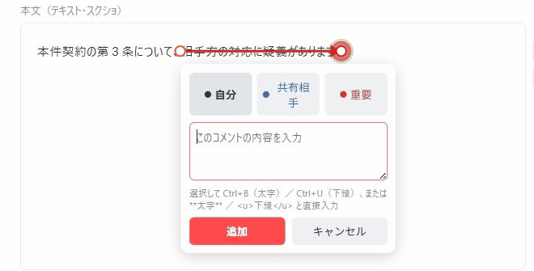
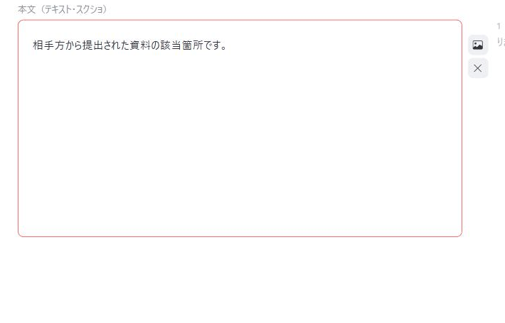

使い方
テキスト・Markdown・PDFなどの資料に、右側のサイドノートで注釈を付けていく手順です。基本の操作のあとに、書式・項番設定・PDFモード・Markdownの取り込みといった追加機能をまとめています。
基本の使い方
-
テキスト・画像・注釈したい範囲を選択すると入力欄が出ます。コメントを書いて色（自分／共有相手／重要）を選ぶと、右側にサイドノートが付きます。同じ範囲に「＋ 返信」で追記もできます。

-
段落にカーソルを乗せると、右側に「＋画像」「×削除」のアイコンが出ます。「＋画像」はその段落の直後に画像を挿入、「×削除」はその段落（画像の場合はその1枚）だけを消します。書式ツールバーの「画像を挿入」でも、カーソルのある段落の直後に画像ファイルを挿入できます（複数選択可）。画像はMarkdownで書き出すと
の形になります。
-
「開く」でPDFファイルを選ぶと、そのPDFにサイドノートを付けるモードになります。文字が選択できるPDFは範囲選択、スキャンなど文字が選択できないPDFはクリックまたはドラッグでノートの位置を指定します。

その他の操作
- 保存はタイトル＋日時付きの.jsonファイルに書き出します（画像・PDF本体も内包されます）。
- 「続きから再開」はブラウザ内の自動保存を読み込みます（.json保存とは別物で、この端末・このブラウザでのみ有効です）。
- 「新しい作業」は本文・ノート・画像・タイトルを全て消して、別の案件を新規に始めます（PDFモードで押した場合も本文モードへ戻ります）。
- 「.pdf」を押すと、カラーか白黒かを選ぶパネルが開き、選ぶと印刷ダイアログが開きます。白黒は文字を黒・画像を灰色にして書き出すので、白黒で印刷する資料に向いています（前回の選択は覚えていて、次に開いた時に濃く表示されます）。保存先（プリンター）で「PDFに保存」を選んでください。
- Ctrl＋Sでも「保存」と同じ動作（.json書き出し。.mdを開いた直後は.mdへの上書き）になります。
書式・項番設定・PDFモード・Markdown
- 本文用の書式ツールバー：配置・インデント・ぶら下げ（1〜3字）・スタイル（本文／H1〜H3の見出し）はカーソルのある段落（複数段落を選択した場合はその全段落）に、太字・下線・傍点は選択した文字に適用されます。傍点は範囲選択が必須で、同じ範囲をもう一度選んで押すと解除できます。Enterで段落を分けた直後は、直前の段落と同じ配置・インデント・ぶら下げを引き継ぎます（見出しのスタイルは引き継ぎません。下記参照）。PDFモードでは使えません。
- Enterは新しい段落を作ります（段落と段落の間には余白が入ります）。Shift+Enterは段落を分けずに行だけ変えます（同じ段落内で改行するだけで、段落の余白は入りません）。
- 「デザイン」の「カスタマイズ」：見出し（H1〜H3）の文字サイズ・太字と、項番の型（第１／１／⑴／ア）ごとのインデント・ぶら下げをまとめて設定できます。「項番を一括適用」を押すと、文書内の該当する段落にまとめて書き込まれます（手動で書式を変えた段落は保護されて対象外になります）。設定は文書の.jsonに保存されます。
- 「デザイン」の他の7種類（雑誌風／公文書風／フラット／ダークUI／和モダン／サイト／段組み）は本文の見た目だけを切り替えます。切り替えても本文・注釈の中身は変わりません。「段組み」は和モダンをベースに、PDFをA4横の2段組み（本文16pt・1段21字）で書き出します（サイドノートがある文書は、従来のサイドバー付きの版面です）。改ページは、次のページの左の段から始まります。
- 「開く」で.mdファイルを選ぶか、本文エリアへ直接ドラッグ＆ドロップするとMarkdownとして取り込みます（見出し・段落・太字/斜体・リンク・リスト・引用・表・区切り線・改ページ・コードブロック・画像に対応）。
- Markdownに
<!-- pagebreak -->（HTMLコメント）だけの1行があると、そこが「改ページ」になります。ツールバーの「改ページ」ボタンでも現在の段落の直後に入れられ、点線の「改ページ」表示の×で削除します。PDF（印刷）とWord書き出しでは、そこから次のページの先頭になります。「MDで書き出す」でも同じ1行になり、他のMarkdownビューアではコメントとして扱われて表示されません。 - Ctrl+Vでの貼り付けもMarkdownとして取り込みます。本文が空のときは文書全体の取り込み（タイトル欄は開いたファイル名のまま変えず、先頭の見出し「#」も本文にそのまま残します。本文は丸ごと置き換え）、すでに何か書かれているときはカーソルのある段落の直後へ挿入します（段落の途中に割り込む挙動は持ちません）。「開く」やドラッグ＆ドロップでの取り込みは、いつでも本文を丸ごと置き換えます（必要なら先に「保存」しておいてください）。
- Markdownから取り込んだ見出し（「#」「##」…）に、スタイルの「H1」〜「H3」「本文」ボタンを使うと、取り込み時と同じ見た目（デザインごとの見出しの大きさ・余白）のまま見出しの階層を付け替えられます（「本文」で見出しを解除することもできます）。Markdownモード中は、素の段落に付ける見出しも同じ扱いになります（通常モードの素の段落へ付けた見出しは、これまでどおり「カスタマイズ」の文字サイズ・太字で表示します）。
- 見出しの途中でEnterしても、常にプレーンな段落が続きます（構造の変更はできない仕様です）。箇条書き・番号付きリストの項目は例外で、Enterで続きの項目が続きます（空の項目でEnterするとリストを抜けます）。
- 「MDで書き出す」は注釈を含まないプレーンなMarkdownとして書き出します。.mdを少し直しただけの時に使ってください（PDFモードでは使えません）。
- 書式ツールバー右端の「Markdownモード」にチェックを入れると、配置・インデント・ぶら下げ・文字サイズ・傍点とサイドノートをグレーアウトして使えなくします。これらは「MDで書き出す」の中身には反映されないため、Markdownとして書き出す前提で編集する時に、後で消えてしまう装飾を誤って使わないための目印です。チェックを外せばすぐ元通り使えます（すでに付けた書式・サイドノートが消えるわけではありません）。あわせて、Markdownモード中は画面（Web表示）とPDF書き出しの見た目をそろえます：画面の1行の長さをPDFと同じ全角40字にし（画面が少し横に広がります。ウィンドウが狭いと40字より少なくなります）、PDFの段落の後ろの余白・見出しの上の余白を画面と同じ値にします（デザインごとの余白の違いも画面と同じになります）。
- Markdownの取り込み（貼り付け・「開く」・ドラッグ＆ドロップ）と画像の挿入は、Ctrl+Zでは戻せません。書き始める前に「保存」しておくか、取り込み直してください。
ウェブ用Markdown作成版（別アプリ）だけの操作
本文とサイドノートを、MkDocs・Docsify等の静的サイト用のMarkdownとして書き出す、独立した別のアプリです（ウェブ用Markdown作成版を開く）。書式は太字・下線・見出し（H1〜H3）だけを持ちます（配置・インデント・ぶら下げ・傍点・PDFモードはこのアプリの担当です）。
- 「書き出し」を押すとパネルが開きます。形式は「ウェブ用（MkDocs / Docsify など）」と「hotline用（
:N X:マーカー）」の2つから選べます。 - 「フォルダへ書き出す」でサイトのフォルダ（MkDocsなら
docs/以下）を選ぶと、「タイトル.md」として直接書き込みます。初回だけフォルダ選択が出て、以後は同じ場所へ上書きするので、書き直したら押すだけで反映されます（「保存先を選び直す」で別のフォルダに切り替えられます）。 - 「サイドノート用のCSS（sidenote.css）も一緒に書き出す」をオンにすると、注釈を右余白へ並べるCSSが同じフォルダに書き出されます。ページ側で1回読み込んでください（MkDocsは
extra_css、Docsifyは<link rel="stylesheet">）。 - 書き出しの中身：見出し（H1〜H3）はMarkdownの
##〜####、段落は素のMarkdownの段落、サイドノートは段落の直後の<aside class="sn-note">になります。画像は書き出しに含まれません。 - File System Access API非対応のブラウザ（Firefox等）では、フォルダへの直接書き込みの代わりにダウンロードになります。「本文をコピー」「CSSをコピー」でクリップボードへ取ることもできます。